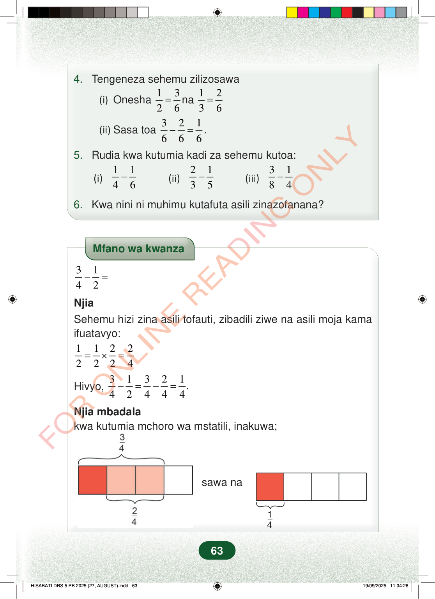

4.Tengeneza sehemu zilizosawa(i)Onesha1326=na1236=(ii)Sasa toa321666−=.5.Rudia kwa kutumia kadi za sehemu kutoa:(i)1146−(ii)2135−(iii)3184−6.Kwa nini ni muhimu kutafuta asili zinazofanana?Mfano wa kwanza3142−=NjiaSehemu hizi zina asili tofauti, zibadili ziwe na asili moja kamaifuatavyo:11222224=×=Hivyo,31321.42444−=−=Njia mbadalakwa kutumia mchoro wa mstatili, inakuwa;sawa na1463
4. Tengeneza sehemu zilizosawa
(i) Onesha 1 3 2 6 = na 1 2 3 6 =
(ii) Sasa toa 3 2 1 6 6 6 − = .
5. Rudia kwa kutumia kadi za sehemu kutoa:
(i) 1 1 4 6 − (ii) 2 1 3 5 − (iii) 3 1 8 4 −
6. Kwa nini ni muhimu kutafuta asili zinazofanana?
Mfano wa kwanza
3 1 4 2 − =
Njia
Sehemu hizi zina asili tofauti, zibadili ziwe na asili moja kama ifuatavyo:
1 1 2 2 2 2 2 4 = × =
Hivyo, 3 1 3 2 1. 4 2 4 4 4 − = − =
Njia mbadala kwa kutumia mchoro wa mstatili, inakuwa;
sawa na
1 4
63
Mazoezi ya sehemu yanayoonyesha sehemu zinazolingana, kama 1/2 = 3/6 na 1/3 = 2/6, kisha kuhesabu 3/6 - 2/6 = 1/6. Pia kuna maswali ya kutoa sehemu kama 1/4 - 1/6, 2/3 - 1/5, na 3/8 - 1/4, na swali la kwa nini ni muhimu kupata asili zinazofanana.4.Tengeneza sehemu zilizosawa.(i)Onesha 12=36 na 13=26.(ii)Sasa toa 36−26=16.5.Rudia kwa kutumia kadi za sehemu kutoa:(i)14−16(ii)23−15(iii)38−146.Kwa nini ni muhimu kutafuta asili zinazofanana?Mfano wa kwanza unaonyesha jinsi ya kutoa 3/4 - 1/2 kwa kubadili 1/2 kuwa 2/4, hivyo jibu ni 1/4. Chini yake, michoro ya mistatili inaonyesha robo tatu, robo mbili, na sehemu inayobaki robo moja.Mfano wa kwanza34−12=NjiaSehemu hizi zina asili tofauti, zibadili ziwe na asili moja kama ifuatavyo:12=12×22=24Hivyo, 34−12=34−24=14.Njia mbadalakwa kutumia mchoro wa mstatili, inakuwa;Mstari umegawanywa katika sehemu 4 sawa. Sehemu 3 kati ya 4 zimeonyeshwa, na kati ya hizo sehemu 2 kati ya 4 zinawekwa alama ili kuonyesha kinachobaki ni 1/4.sawa naMstari umegawanywa katika sehemu 4 sawa. Sehemu 3 kati ya 4 zimeonyeshwa, na kati ya hizo sehemu 2 kati ya 4 zinawekwa alama ili kuonyesha kinachobaki ni 1/4.14